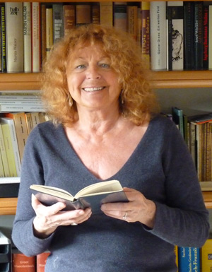

<!DOCTYPE html>
<html class='no-js' lang='en'>
<head>
<meta charset='utf-8'>
<title>Direction &mdash; CETL – Centre Européen de Traduction Littéraire</title>
<meta content='Centre Européen de Traduction Littéraire. Avec le soutien de la Communauté française de Belgique, de la Commission communautaire française.' name='description'>
<meta content='traduction, traduction littéraire' name='keywords'>
<meta content='Françoise Wuilmart' name='author'>
<meta content='Direction &amp;mdash; CETL – Centre Européen de Traduction Littéraire' name='DC.title'>
<meta content='width=device-width, initial-scale=1' name='viewport'>
<link href="../../stylesheets/styles-79adecb8.css" rel="stylesheet" />
<link href='/humans.txt' rel='author'>
<link href='favicon.ico' rel='shortcut icon'>
<script>
  (function(i,s,o,g,r,a,m){i['GoogleAnalyticsObject']=r;i[r]=i[r]||function(){
  (i[r].q=i[r].q||[]).push(arguments)},i[r].l=1*new Date();a=s.createElement(o),
  m=s.getElementsByTagName(o)[0];a.async=1;a.src=g;m.parentNode.insertBefore(a,m)
  })(window,document,'script','//www.google-analytics.com/analytics.js','ga');
  ga('create', 'UA-2826331-7', 'auto');
  ga('require', 'displayfeatures');
  ga('send', 'pageview');
</script>

</head>
</html>

<body class='page'>
<!--[if lte IE 8]><p class='browser-upgrade'>You are using an
<strong>outdated</strong>
browser. Please
<a href="http://browsehappy.com/" rel="external" target="_blank">upgrade your browser</a>to improve your experience.</p><![endif]-->

<header class='banner navbar navbar-default navbar-static-top' role='banner'>
<div class='container'>
<div class='navbar-header'>
<button class='navbar-toggle' data-target='.navbar-collapse' data-toggle='collapse' type='button'>
<span class='sr-only'>Toggle navigation</span>
<span class='icon-bar'></span>
<span class='icon-bar'></span>
<span class='icon-bar'></span>
</button>
<a class='navbar-brand' href='/'>CETL</a>
</div>
<nav class='collapse navbar-collapse' role='navigation'>
<ul class='nav navbar-nav' id='menu-primary-navigation'>
<li class='active'>
<a href="/le-cetl/direction/">Direction</a>
</li>
<li class=''>
<a href="/seminaires-presentiel/">Séminaires en présentiel</a>
</li>
<li class=''>
<a href="/ateliers-visio/">Ateliers en visio-conférence</a>
</li>
<li class=''>
<a href="/articles/">Articles</a>
</li>
<li class=''>
<a href="/liens/">Liens</a>
</li>
<li class=''>
<a href="/contact/">Contact</a>
</li>
</ul>
</nav>
</div>
</header>

<div class='jumbo-background hidden-xs'>
<div class='container'>
<div class='row'>
<div class='col-12'>
<h1 class='jumbo-title'>Centre européen de traduction littéraire</h1>
</div>
</div>
</div>
</div>

<div class='wrap container' role='document'>
<div class='content row'>
<div class='col-sm-12 col-md-3 col-lg-3 hidden-xs sidebar sidebar-left'>
<ol class='menu' id='menu-submenu'>
<li class='active'>
<a href="/le-cetl/direction/">Direction</a>
</li>
<li class=''>
<a href="/le-cetl/direction/publications">Publications</a>
</li>
<li class=''>
<a href="/le-cetl/direction/interviews">Interviews</a>
</li>
</ol>
</div>

<div class='main col-sm-12 col-md-6 col-lg-6'>
<h1>
Direction
</h1>
<h2>FRANÇOISE WUILMART</h2>

<p><em>Née le 7 juin 1942, à Frameries (Belgique)</em></p>

<p><em>Mère de deux enfants (une fille médecin, un fils psychologue)</em></p>

<h2>TITRES, FONCTIONS</h2>

<ul>
<li><p><strong>Licenciée en Philosophie et Lettres</strong> (U.L.B., section philologie germanique)</p></li>
<li><p>Détentrice de la <em><strong>Notoriété scientifique et professionnelle (équivalence belge du doctorat)</strong></em> pour ses traductions de Ernst Bloch et la diffusion écrite et orale de la pensée du philosophe allemand dans la francophonie.</p></li>
<li><p><strong>Professeur émérite de traduction</strong> (allemand/français) à l’Institut supérieur de Traducteurs et Interprètes de la Communauté française de Belgique (ISTI) / Université libre de Bruxelles (ULB)</p></li>
<li><p><strong>Traductrice littéraire</strong> (auprès des Editions Gallimard, Actes Sud, La Différence, Le Seuil, Flammarion, Labor).</p></li>
<li><p><strong>Fondatrice et directrice</strong> du <em>Centre Européen de Traduction littéraire</em> (C.E.T.L.), cycle postuniversitaire de formation en traduction littéraire (depuis 1989).Website&nbsp;: www.traduction-litteraire.com</p></li>
<li><p><strong>Fondatrice et directrice</strong> du <em>Collège européen des Traducteurs littéraires de Seneffe</em> (depuis juin 1996).Website&nbsp;: www.ctls.be</p></li>
<li><p><strong>Membre fondateur du CEATL</strong> (<em>Conseil européen des associations de traducteurs littéraire</em>) et représentante de la Belgique francophone au sein de cette association de 28 membres européens.</p></li>
<li><p><strong>Fondatrice et coordinatrice</strong> du D.E.S.S. en <em>traduction littéraire</em> à l’ISTI (depuis 2000), actuellement <em>Master pro</em> en traduction littéraire.</p></li>
<li><p><strong>Fondatrice et présidente</strong> de l’<em>Association des Traducteurs littéraires de Belgique</em> (A.T.L.B.) (depuis 2011)</p></li>
<li><p><strong>Membre du Conseil d’administration</strong> de la DLF (Défense de la langue française), section belge.</p></li>
<li><p><strong>Présidente d’honneur</strong> de l’A.R.L.E. (<em>Association pour le Rayonnement des Langues européennes</em>).</p></li>
<li><p><strong>Membre du PEN-Club</strong> de Belgique</p></li>
</ul>

<h2>PUBLICATIONS</h2>

<h3>Une trentaine d’articles et d’essais sur la traduction littéraire et la pédagogie de la traduction, publiés dans les revues&nbsp;:</h3>

<p><em>Babel, Équivalences, Translittérature, META, Palimpsestes, Rilune, Les Cahiers de la Sorbonne</em>, etc. et dans les actes de colloques.</p>

<p>Une vingtaine d’articles ont été traduits et publiés dans plusieurs langues étrangères (allemand, anglais, bulgare, estonien, hongrois, letton, lituanien, néerlandais, roumain, russe, slovaque, ukrainien…)</p>

<h2>Principales traductions (de l’allemand, du néerlandais et de l’anglais au français):</h2>

<ul>
<li>Pour les Editions <em>Gallimard</em>&nbsp;: <em>Le Principe Espérance</em>, <strong>Ernst Bloch</strong> (3 tomes) (de 1973 à 1991)</li>
<li>Pour les Editions <em>Labor</em>&nbsp;: <em>Les Poires de Ribbeck</em>, <strong>F.C. Delius</strong>, (1994)</li>
<li><p>Pour les Éditions Actes Sud: les oeuvres majeures de <strong>Jean Améry</strong>:</p>

<ul>
<li><em>Charles Bovary, Portrait d’un homme simple</em> (1991).</li>
<li><em>Par-delà le Crime et le Châtiment</em> (1995)</li>
<li><em>Lefeu ou la démolition</em> (février 1996)</li>
<li><em>Porter la main sur soi - Traité du suicide</em> (octobre 1996)</li>
</ul></li>
<li><p>Pour les Editions <em>La Différence</em>&nbsp;: <em>Jeudi 15h30</em>, de <strong>Kristien Hemmerechts</strong></p></li>
<li><p><strong>SAID</strong>&nbsp;: «&nbsp;<em>Là où je meurs est mon exil</em>&nbsp;», recueil de poèmes sur l’exil (allemand au français)</p></li>
<li><p>Pour les éditions <em>Gallimard</em>, collections Témoins: <em>Une Femme à Berlin</em> , Anonyme, paru le 9 novembre 2006 – janvier 2019&nbsp;: <strong>100 000 exemplaires</strong> (Folio)</p></li>
<li><p>Pour les éditions <em>Flammarion</em>&nbsp;:</p>

<ul>
<li><em>Pourquoi la vie passe plus vite à mesure qu’on vieillit</em>, <strong>Douwe Draaisma</strong>., 5 avril 2008 (du néerlandais au français)</li>
<li>Retraduction de neuf Nouvelles de Stefan Zweig, février 2013 (de l’allemand au français)</li>
</ul></li>
<li><p>Pour la Maison Antoine Vitez&nbsp;:</p>

<ul>
<li><em>Cette Fleur est ma révolution</em>, pièce de théâtre poétique, de <strong>Peter Verhelst</strong>, mai 2007 (du néerlandais au français)</li>
<li><em>Le Couple Alpha</em>, pièce de théâtre de <strong>Marijke Schemers</strong>, avril 2006 (du néerlandais au français)</li>
</ul></li>
<li><p>Pour La Galerie, Centre d’Art contemporain&nbsp;:</p>

<ul>
<li><em>Grandéveillée&nbsp;!</em>, monologue pour le théâtre, de <strong>Orla Barry</strong>, mai 2009 (de l’anglais au français)</li>
</ul></li>
<li><p>Pour Ixelles-Publishing&nbsp;:</p>

<ul>
<li><em>Substitutions</em>, de <strong>Tania Carver</strong>, novembre 2009 (de l’anglais au français)</li>
<li>Nombreuses traductions culturelles&nbsp;: essais sur la philosophie de <strong>l’art</strong>, sur la psychologie et la psychanalyse, livret d’opéra, catalogues d’art</li>
</ul></li>
<li><p>Pour les éditions Robert Laffont (collection Bouquins), février 2013&nbsp;:</p>

<ul>
<li><strong>Stefan Zweig:</strong> Le Joueur d’échecs / Vingt-quatre heures de la vie d’une femme / La Nuit fantastique / La Croix/ La Marche / La Collection invisible / Histoire au Crépuscule / La Contrainte / Les sœurs (dis)semblables.</li>
</ul></li>
<li><p>Depuis avril 2013 , pour les éditions Verdier&nbsp;:</p>

<ul>
<li>chargée de la coordination du chapitre Le Traducteur&nbsp;: tome III de Histoire des traductions en langue française, à paraître en 2018.</li>
</ul></li>
<li><p><strong>Nombreuses traductions culturelles:</strong> essais sur la philosophie de <strong>l’art</strong>, sur la <strong>psychologie et la psychanalyse, livret d’opéra, catalogues d’art</strong>.</p></li>
</ul>

<h2>PRIX</h2>

<p><strong>Prix Ernst-Bloch</strong> en 1991 (Ernst-Bloch-Gesellschaft, Tübingen) - pour les travaux de traduction et de recherches sur le philosophe et pour la diffusion de sa pensée (par des articles, des conférences et des colloques) dans la francophonie.</p>

<p>Lauréate du <strong>PRIX ARISTEION (Prix européen de la meilleure traduction littéraire)</strong> en 1993, pour la transposition en français de l’oeuvre majeure du philosophe allemand Ernst BLOCH: DAS PRINZIP HOFFNUNG (Le Principe Espérance) 3 tomes - 2000 pages - NRF-Gallimard.</p>

<p><strong>Prix Gérard de Nerval</strong>, mai 1996 (Prix de consécration décerné par la SGDL de Paris) à l’occasion de la parution en français de Lefeu oder der Abbruch (Lefeu ou la démolition) de Jean AMERY, traduit chez Actes Sud, Arles.</p>

</div>
<aside class='sidebar hidden-xs hidden-sm col-md-3 col-lg-3' role='complementary'>
<div class='thumbnail'>

</div>
</aside>

</div>
</div>
<footer class='container' role='contentinfo'>
<div class='row'>
<div class='col-lg-12'>
<p class='text-center'>
© 2025 CETL – Centre Européen de Traduction Littéraire
</p>
</div>
</div>
</footer>

<script src='https://cdn.jsdelivr.net/lodash/4.17.4/lodash.min.js'></script>
<script src="../../javascripts/scripts-da39a3ee.js"></script>
</body>
